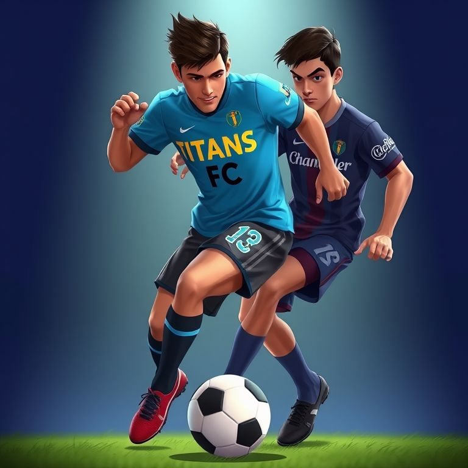
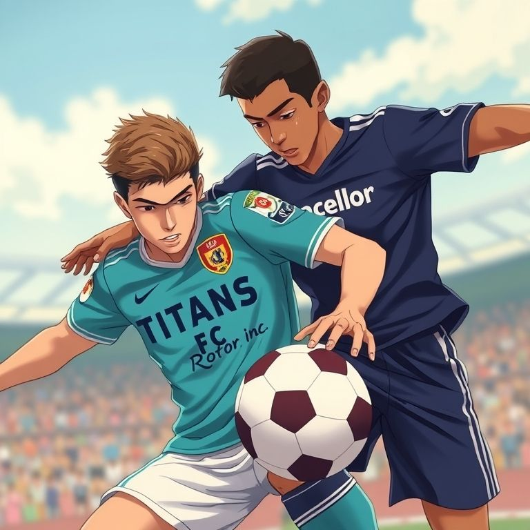

Update!

Titans FC coach Chrispine Omondi signs contract with rotor Inc CEO Christian Nyamari.Read more
The robust Titans FC(Titans Football club) has entered into a contract with rotor Inc. Titans FC coach Chrispine Omondi signed the contract with rotor Inc CEO Christian Nyamari. Currently, Titans FC T-shirts are being branded rotor Inc and circulated globally.

Meanwhile, tensions continue to grow among the Chancellor teams as Titans FC creates a tighter oxygen debt for them.